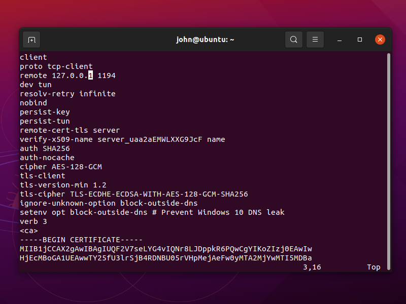
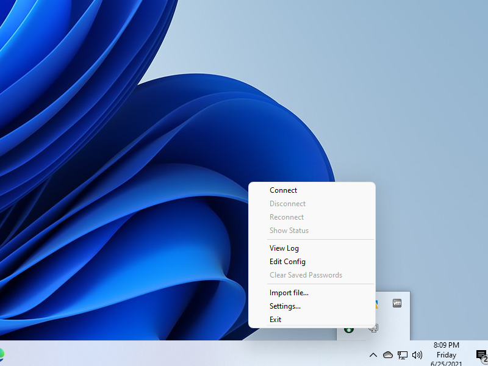

OpenVPN + Stunnel
People in not-free countries often have a problem with OpenVPN connections being blocked by government censors. This article describes one possible solution.
OpenVPN is tunneled through Stunnel, thus resembling a TLS connection on port 443. Whether or not this gets through Deep Packet Inspection (DPI) depends
on the sophistication of the DPI. It may work in some countries but not in others. We include server name indicator (SNI) in the TLS to make the connection look a bit
more like a real HTTPS connection.
The server in this article runs Debian 10 or a recent version of Ubuntu. The same server configuration can handle a client running Linux, Windows, or Android.
1. Set Up Server
1.1. Open Firewall
There are multiple ways to implement a firewall: nftables, iptables, ufw, and firewalld. The modern way is nftables. However, in a moment we are going to install OpenVPN with a script that uses iptables. Therefore we will use iptables to build our basic firewall. Issue each of these commands in turn:
iptables -A INPUT -m conntrack --ctstate ESTABLISHED,RELATED -j ACCEPT
iptables -A INPUT -i lo -j ACCEPT
iptables -A INPUT -p icmp --icmp-type echo-request -j ACCEPT
Open port 22 for SSH. If you can restrict the port 22 rule so that only certain source IP addresses are whitelisted for SSH access
(-s xx.xx.xx.xx/32), then so much the better.
iptables -A INPUT -p tcp --dport 22 -j ACCEPT
Add a rule to open port 443, the HTTPS port:
iptables -A INPUT -p tcp --dport 443 -j ACCEPT
Drop all unexpected input:
iptables -P INPUT DROP
Save the iptables rules so that they persist after reboots:
apt update && apt upgrade -y
apt install iptables-persistent -y
1.2. Implement BBR
Bottleneck Bandwidth and Round-trip propagation time (BBR) is a TCP congestion control algorithm developed at Google. Under certain types of network congestion, it will improve your latency. Implement BBR TCP congestion control on your server with the following commands:
cat >> /etc/sysctl.d/50-bbr.conf <<EOF
net.core.default_qdisc=fq
net.ipv4.tcp_congestion_control=bbr
EOF
sysctl -p /etc/sysctl.d/50-bbr.conf
1.3. Download Angristan OpenVPN Install Script
Get the Angristan OpenVPN script from GitHub:
wget https://raw.githubusercontent.com/angristan/openvpn-install/master/openvpn-install.sh
Make the script executable:
chmod +x openvpn-install.sh
1.4. Run Script and Create Client OVPN File
Run the Angristan OpenVPN script:
./openvpn-install.sh
You can accept the suggested default answers to most of the questions, but Stunnel will require OpenVPN to use TCP rather than UDP:
- IP address should accurately reflect the IP address of your server
- Port choice should be
1194(it will be hidden behind Stunnel anyway) - Important: Protocol must be
TCPto work with Stunnel - For DNS servers, you can choose your favorite, e.g. Cloudflare or Google
- For enable compression, recommend
nfor no - For customized encryption settings, recommend
nfor no
After answering all the questions, press any key to continue and run the script. At the end of the installation, you are asked about the first client:
- For the first client name, we will put
client1 - For the private key file, we will put passwordless
You can check that OpenVPN is active (running) after the script finishes:
systemctl status openvpn@server
Check also that OpenVPN is listening for TCP input on port 1194:
ss -tulpn | grep 1194
1.5. Adjust Firewall Rules
If you look at the iptables firewall, you will see that the script has opened port 1194 to the public:
iptables -vnL
We want to make the OpenVPN server as invisible as possible. Therefore we will close port 1194 to the public. In a few minutes, we’ll add Stunnel to
handle incoming traffic and pass it to OpenVPN on the loopback interface port 1194.
Edit the iptables rules that get added when OpenVPN is brought up:
vi /etc/iptables/add-openvpn-rules.sh
Delete the line that inserts an input rule accepting TCP packets on port 1194. Save the file.
Edit the iptables rules that get removed when OpenVPN is brought down:
vi /etc/iptables/rm-openvpn-rules.sh
Delete the line deleting the input rule accepting TCP packets on port 1194. Save the file.
Make sure that everything still works after you reboot the server:
reboot
Check the revised iptables rules:
iptables -vnL
You should see that port 1194 is no longer open to the public. Traffic that is passed from Stunnel to OpenVPN will still be accepted, since it uses the
loopback interface (-i lo), for which we added a special iptables rule at the beginning.
1.6. Install Stunnel
Install Stunnel version 4 from the repositories:
apt install stunnel4 -y
1.7. Generate Stunnel Server Private Key and Certificate
Issue the following commands in turn to generate a private key and a certificate for the Stunnel server:
cd /etc/stunnel
openssl genrsa -out key.pem 2048
openssl req -new -x509 -key key.pem -out cert.pem -days 3650
You can accept or override the identifiers for the certificate, as you prefer:
Country Name (2 letter code) [AU]:
State or Province Name (full name) [Some-State]:
Locality Name (eg, city) []:
Organization Name (eg, company) [Internet Widgits Pty Ltd]:
Organizational Unit Name (eg, section) []:
Common Name (e.g. server FQDN or YOUR name) []:
Email Address []:
1.8. Configure Stunnel
Edit the Stunnel configuration file:
vi /etc/stunnel/stunnel.conf
Insert these contents. Stunnel will listen on port 443 and pass traffic to OpenVPN internally on port 1194:
pid = /var/run/stunnel4/stunnel.pid
output = /var/log/stunnel4/stunnel.log
setuid = stunnel4
setgid = stunnel4
[openvpn]
cert=/etc/stunnel/cert.pem
key=/etc/stunnel/key.pem
accept = 0.0.0.0:443
connect = 127.0.0.1:1194
Write the file to disk. Quit the editor.
1.9. Enable Automatic Start Up
Edit the defaults file:
vi /etc/default/stunnel4
Insert a new line:
ENABLED=1
Save the file.
1.10. Start Stunnel
Start Stunnel now:
stunnel
Check that it is active and listening:
tail /var/log/stunnel4/stunnel.log
You should see a message, Configuration successful. Do some more checks:
ps -aux | grep stunnel
ss -tulpn | grep 443
Server work is done, so exit:
exit
2. Linux Client
This procedure has been tested with a client running Ubuntu 21.04.
2.1. Copy Client Configuration File from Server to PC
Assuming that your server has IP address yy.yy.yy.yy and that you named the client file client1.ovpn, copy the OVPN file down from the
server to the client like this:
scp root@yy.yy.yy.yy:client1.ovpn ~/Downloads/client1.conf
2.2. Install Stunnel Client
Install Stunnel version 4 from the repositories:
sudo apt update && sudo apt upgrade -y
sudo apt install stunnel4 -y
2.3. Configure Stunnel Client
Edit the Stunnel configuration file:
sudo vi /etc/stunnel/stunnel.conf
Insert these contents, replacing IP address yy.yy.yy.yy by the actual server IP address:
output = /var/log/stunnel4/stunnel.log
pid = /var/run/stunnel4/stunnel.pid
client = yes
[openvpn]
sni = www.bing.com
accept = 127.0.0.1:1194
connect = yy.yy.yy.yy:443
Save the file.
2.4. Start Stunnel
Start Stunnel now:
sudo stunnel
Check that Stunnel is running as expected:
sudo tail /var/log/stunnel4/stunnel.log
sudo ps -aux | grep stunnel
sudo ss -tulpn | grep 1194
2.5. Install OpenVPN Client
Install OpenVPN for GNOME and all its dependencies from the repositories:
sudo apt install network-manager-openvpn-gnome -y
2.6. Configure OpenVPN Client
Edit the downloaded OpenVPN client configuration file:
vi ~/Downloads/client1.conf

Change the remote address to 127.0.0.1 port 1194.
Save the file. You can now also close your terminal.
From GNOME Settings, go to the Network page.
- Click the plus sign to add a VPN
- Select the option Import from file...
- Select your downloaded
~/Downloads/client1.conffile - Click Add
2.7. Add Static Route to Server
With OpenVPN and Stunnel running at the same time, we must prevent a routing loop. We do not want traffic for the OpenVPN server to go to the OpenVPN client, then to the Stunnel client, and then back to the OpenVPN client again.
On Windows, you can add route yy.yy.yy.yy 255.255.255.255 net_gateway to the OpenVPN client configuration. This does not work on a Linux client running
Network Manager due to #1417169. Network Manager for OpenVPN does not support special
route keywords such as vpn_gateway or net_gateway.
Therefore on a Linux client, we will add a static route at this stage.
Determine your default gateway:
ip route | grep default
Let’s say, for example, that your OpenVPN server is yy.yy.yy.yy, your default gateway is 192.168.1.254, and your real interface is
ens33. Add a temporary static route:
sudo ip route add yy.yy.yy.yy via 192.168.1.254 dev ens33
The route will persist until the next reboot (or until you explicitly delete the route).
2.8. Test End-to-End
In GNOME Network Settings, toggle your newly added VPN connection to the ON position.
Open Firefox, and visit IP Chicken.
You should see the IP address of your remote server, not your local client.
3. Windows Client
Download the OpenVPN client configuration file with the scp tool that comes with Windows PowerShell, replacing yy.yy.yy.yy by your actual
server IP address:
scp -P 22 root@yy.yy.yy.yy:client1.ovpn Downloads
The client1.ovpn file ends up in your Downloads folder.
Download the Stunnel installer for Windows from https://www.stunnel.org/downloads.html. It will
have a name such as stunnel-5.59-win64-installer.exe. Run the installer. Fill in your certificate identifying information when prompted.
Launch Stunnel from the Stunnel shortcut on your desktop. Right-click on the Stunnel icon in the system tray at the bottom right of your Windows desktop.
Select Edit Configuration.. Configure Stunnel like this, replacing yy.yy.yy.yy by your actual server IP address:
output = stunnel.log
client = yes
[openvpn]
sni = www.bing.com
accept = 127.0.0.1:1194
connect = yy.yy.yy.yy:443
Save the file. Right-click on the Stunnel icon in the system tray. Select Reload Configuration. Stunnel is now listening on localhost port
1194.
Download the OpenVPN installer for Windows from https://openvpn.net/community-downloads. It
will have a name such as OpenVPN-2.5.3-I601-amd64.msi. Run the installer.
Edit the downloaded OpenVPN configuration file in Notepad. Edit the remote address to be 127.0.0.1, and add a route to the server,
replacing yy.yy.yy.yy by your actual server IP address:
remote 127.0.0.1 1194
route yy.yy.yy.yy 255.255.255.255 net_gateway
Save the file. Right-click on the OpenVPN icon in the system tray, and import the revised configuration file. Right-click on the OpenVPN icon in the system tray, and connect.
Test end-to-end by opening a browser and visiting IP Chicken. You should see the IP address of your remote server, not your local client.
4. Android Client
It should be possible to use an Android client with the apps SSLDroid and OpenVPN for Android. This has not been tested.
5. Get Help and Report Issues
- For OpenVPN questions, post in the OpenVPN forum
- For Stunnel support, see the Stunnel website
Updated 2021-06-25